전산응용토목제도기능사 (2014-07-20 기출문제)
1과목: 토목제도(CAD)
1. D25(공칭지름 25.4m)의 철근을 180° 표준갈고리로 제작할 때 구부린 반원 끝에서 얼마 이상 더 연장하여야 하는가?
- 25.4㎜
- 60.0㎜
- 76.2㎜
- 101.6㎜
(정답률: 55%)

2. 단철근 직사각형보에서 철근의 항복강도 fy=35MPa, 단면의 유효깊이 d=600일 때 균형 단면에 대한 중립축의 깊이(c)를 강도 설계법으로 구한 값은 약 얼마인가?
- 280mm
- 300mm
- 380mm
- 400mm
(정답률: 43%)
3. 철근콘크리트 부재의 경우에 사용할 수 있는 전단철근의 형태가 아닌 것은?
- 주인장 철근에 30° 이상의 각도로 구부린 굽힘철근
- 주인장 철근에 45° 이상의 각도로 설치되는 스터럽
- 스터럽과 굽힘철근의 조합
- 주인장 철근과 나란한 용접철망
(정답률: 61%)
4. 포틀랜드 시멘트의 종류로 옳지 않은 것은?
- 포틀랜드 플라이 애시 시멘트
- 중용열 포틀랜드 시멘트
- 조강 포틀랜드 시멘트
- 저열 포틀랜드 시멘트
(정답률: 76%)
5. 배합설계의 기본원칙으로 옳지 않은 것은?
- 단위량은 질량배합을 원칙으로 한다.
- 작업이 가능한 범위에서 단위수량이 최소가 되도록 한다.
- 작업이 가능한 범위에서 굵은 골재 최대치수가 작게 한다.
- 강도와 내구성이 확보되도록 한다.
(정답률: 57%)
6. 콘크리트의 동해방지를 위한 대책으로 가장 효과적인 것은?
- 밀도가 작은 경량골재 콘크리트로 시공한다.
- 물-시멘트비를 크게 하여 시공한다.
- AE 콘크리트로 시공한다.
- 흡수율이 큰 골재를 사용하여 시공한다.
(정답률: 74%)
7. 압축부재에 사용되는 나선철근의 순간격 기준으로 옳은 것은?
- 25㎜ 이상, 55㎜ 이하
- 25㎜ 이상, 75㎜ 이하
- 55㎜ 이상, 75㎜ 이하
- 55㎜ 이상, 90㎜ 이하
(정답률: 77%)
8. 시멘트의 분말도에 관한 설명으로 옳지 않은 것은?
- 시멘트의 분말도란 단위질량(g)당 표면적을 말한다.
- 분말도가 클수록 블리딩이 증가한다.
- 분말도가 클수록 건조수축이 크다.
- 분말도가 크면 풍화하기 쉽다.
(정답률: 56%)
9. 철근 콘크리트 보의 휨부재에 대한 강도설계법의 기본 가정이 아닌 것은?
- 콘크리트의 변형률은 중립축으로부터 거리에 비례한다.
- 철근의 변형률은 중립축으로부터 거리에 비례한다.
- 단면설계시 콘크리트의 응력은 등가직사각형 분포로 가정한다.
- 단면설계시 콘크리트의 인장강도를 고려한다.
(정답률: 51%)
10. 시멘트, 잔골재, 물 및 필요에 따라 첨가하는 혼화재료를 구성재료로 하여, 이들을 비벼서 만든 것, 또는 경화된 것을 무엇이라고 하는가?
- 시멘트 풀
- 모르타르
- 무근콘크리트
- 철근콘크리트
(정답률: 66%)
11. 잔골재의 조립률 2.3, 굵은골재의 조립률 6.4를 사용하여 잔골재와 굵은골재를 질량비 1:1.5로 혼합하면 이때 혼합된 골재의 조립률은?
- 3.67
- 4.76
- 5.27
- 6.12
(정답률: 54%)
12. 프리스트레스하지 않는 부재의 현장치기콘크리트 중에서 외부의 공기나 흙에 접하지 않는 콘크리트의 보나 기둥의 최소 피복 두께는 얼마 이상이어야 하는가?
- 20㎜
- 40㎜
- 50㎜
- 60㎜
(정답률: 63%)
13. 콘크리트를 친 후 시멘트와 골재알이 가라앉으면서 물이 떠오르는 현상을 무엇이라 하는가?
- 풍화
- 레이턴스
- 블리딩
- 경화
(정답률: 90%)
14. 철근배치에서 간격 제한에 대한 설명으로 옳은 것은?
- 동일 평면에서 평행한 철근 사이의 수평 순간격은 20㎜ 이하로 하여야 한다.
- 벽체 또는 슬래브에서 휨 주철근의 간격은 벽체나 슬래브 두께의 4배 이상으로 하여야 한다.
- 상단과 하단에 2단 이상으로 배치된 경우 상하 철근은 동일 단면 내에서 서로 지그재그로 배치하여야 한다.
- 나선철근 또는 띠철근이 배근된 압축부재에서 축방향 철근의 순간격은 40㎜ 이상으로 하여야 한다.
(정답률: 48%)
15. 철근콘크리트 강도설계법에서 단철근 직사각형 보에 대한 균형 철근비(Pb)를 구하는 식은? (단, fck : 콘크리트설계기준강도(MPa), fy : 철근의 설계기준항복강도(MPa), β1 : 계수)
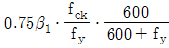
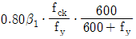
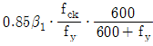
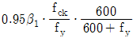
(정답률: 71%)
16. 압축이형철근의 기본정착길이를 구하는 식은? (단, fy : 철근의 설계기준항복강도, db, 철근의 공칭지름, fck : 콘크리트의 설계기준압축강도, λ : 경량콘크리트계수)
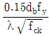
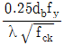
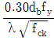
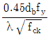
(정답률: 65%)
17. 구조물의 파괴상태 기준으로 예상되는 최대 하중에 대하여 구조물의 안전을 확보하려는 설계 방법은?
- 강도 설계법
- 허용 응력 설계법
- 한계 상태 설계법
- 전단 응력 설계법
(정답률: 56%)
18. 콘크리트의 강도는 일반적으로 표준양생을 실시한 콘크리트 공시체의 재령 며칠의 시험값을 기준으로 하는가?
- 10일
- 14일
- 20일
- 28일
(정답률: 82%)
19. 철근의 겹침이음 길이를 결정하기 위한 요소와 거리가 먼 것은?
- 철근의 길이
- 철근의 종류
- 철근의 공칭지름
- 철근의 설계기준항복강도
(정답률: 35%)
20. 철근비가 균형철근비보다 클 때, 보의 파괴가 압축측 콘크리트의 파쇄로 시작되는 파괴 형태는?
- 취성파괴
- 연성파괴
- 경성파괴
- 강성파괴
(정답률: 55%)
2과목: 철근콘크리트
21. 기둥, 교대, 교각, 벽 등에 작용하는 상부 구조물의 하중을 지반에 안전하게 전달하기 위하여 설치하는 구조물은?
- 노상
- 암거
- 노반
- 확대 기초
(정답률: 74%)
22. 다음에서 설명하는 구조물은?
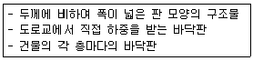
- 보
- 기둥
- 슬래브
- 확대 기초
(정답률: 77%)
23. 프리스트레스트 콘크리트의 사용 재료로 볼 수 없는 것은?
- 고강도 콘크리트
- 고강도 강봉
- 고강도 강선
- 고압축 철근
(정답률: 52%)
24. 프리스트레스(PS) 강재에 필요한 성질이 아닌 것은?
- 인장강도가 커야 한다.
- 릴렉세이션(relaxation)이 커야 한다.
- 적당한 연성과 인성이 있어야 한다.
- 응력 부식에 대한 저항성이 커야 한다.
(정답률: 71%)
25. 2방향 슬래브의 해석 및 설계 방법으로 옳지 않은 것은?
- 황하중을 받는 구조물의 해석에 있어서 휨모멘트 크기는 실제 횡변형 크기에 반비례한다.
- 슬래브 시스템이 횡하중을 받는 경우 그 해석 결과는 연직하중의 결과와 조합하여야 한다.
- 슬래브 시스템은 평형 조건과 기하학적 적합 조건을 만족시킬 수 있으면 어떠한 방법으로도 설계할 수 있다.
- 횡방향 변위가 발생하는 골조의 횡방향력 해석을 위해 골조 부재의 강성을 계산할 때 철근과 균열의 영향을 고려한다.
(정답률: 33%)
26. 그림 중 경사 확대 기초를 나타내고 있는 것은?
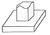
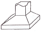
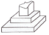
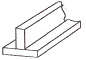
(정답률: 78%)
27. 일반적인 기둥의 종류가 아닌 것은?
- 띠철근 기둥
- 나선 철근 기둥
- 강도 기둥
- 합성 기둥
(정답률: 68%)
28. 강 구조의 장점이 아닌 것은?
- 강도가 매우 크다.
- 균질성을 가지고 있다.
- 부재를 개수하거나 보강하기 쉽다.
- 차량 통행으로 인한 소음 발생이 적다.
(정답률: 81%)
29. 보의 배근도에서 주철근과 연결하여 스터럽 철근을 배근하는 이유는?
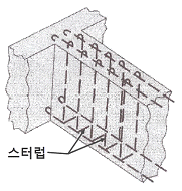
- 압축 응력을 크게 작용하기 위하여
- 철근의 이동을 자유롭게 하기 위하여
- 보의 철근량 균형을 맞추기 위하여
- 보의 전단 균열을 방지하기 위하여
(정답률: 65%)
30. 1900년에 건설된 우리나라 근대식 교량의 시초로 볼 수 있는 것은?
- 진천 농교
- 한강 철교
- 부산 영도교
- 서울 광진교
(정답률: 68%)
31. 강구조 부재 연결에 대한 설명으로 옳지 않은 것은?
- 부재의 연결은 경제적이고 시공이 쉬워야 한다.
- 해로운 응력 집중이 생기지 않도록 한다.
- 주요 부재의 연결 강도는 모재의 전 강도의 60% 이상이어야 한다.
- 응력의 전달이 확실하고, 가능한 한 편심이 생기지 않도록 연결한다.
(정답률: 69%)
32. 토목 구조물 설계에 사용하는 특수 하중에 속하지 않는 것은?
- 설하중
- 풍하중
- 충돌 하중
- 원심 하중
(정답률: 45%)
33. 콘크리트를 주재료로 한 콘크리트 구조에 속하지 않는 것은?
- 강 구조
- 무근 콘크리트 구조
- 철근 콘크리트 구조
- 프리스트레스 콘크리트 구조
(정답률: 71%)
34. 철근 콘크리트(RC) 구조물의 특징이 아닌 것은?
- 철근과 콘크리트는 부착력이 매우 크다.
- 콘크리트 속에 묻힌 철근은 부식되지 않는다.
- 철근과 콘크리트는 온도변화에 대한 열팽창 계수가 비슷하다.
- 철근은 압축 응력이 크고, 콘크리트는 인장 응력이 크다.
(정답률: 72%)
35. 단철근 직사각형 보에서 단면폭 300mm, 유효 깊이가 500mm이고, 철근량(As)은 4100mm2일 때의 철근비는?
- 0.027
- 0.035
- 0.⑤3
- 0.062
(정답률: 44%)
36. 한 도면에서 두 종류 이상의 선이 같은 장소에 겹칠 때 가장 우선되는 선은?
- 중심선
- 절단선
- 외형선
- 숨은선
(정답률: 74%)
37. 치수 기입 중 ‘SR40’이 의미하는 것은?
- 반지름 40mm인 원
- 반지름 40mm인 구
- 반지름 40mm인 정사긱형
- 반지름 40mm인 정삼긱형
(정답률: 69%)
38. 토목제도에 사용하는 문자에 대한 설명으로 옳지 않은 것은?
- 한자의 서체는 KS A 0202에 준하는 것이 좋다.
- 영자는 주로 로마자의 소문자를 사용한다.
- 숫자는 주로 아라비아 숫자를 사용한다.
- 한글자의 서체는 활자체에 준하는 것이 좋다.
(정답률: 70%)
39. 도로 설계의 종단면도에 일반적으로 기입되는 사항이 아닌 것은?
- 계획고
- 횡단면적
- 지반고
- 측점
(정답률: 53%)
40. 그림과 같이 나타내는 정투상법은?
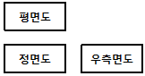
- 제 1각법
- 제 2각법
- 제 3각법
- 제 4각법
(정답률: 80%)
3과목: 토목일반구조
41. 제도 통칙에서 제도 용지의 세로와 가로의 비로 옳은 것은?
- 1 : √2
- 1 : 1.5
- 1 : √3
- 1 : 2
(정답률: 85%)
42. 토목제도에서 도면치수의 기본적인 단위는?
- ㎜
- ㎝
- m
- ㎞
(정답률: 89%)
43. 철근의 갈고리 형태가 아닌 것은?
- 원형 갈고리
- 직각 갈고리
- 예각 갈고리
- 둔각 갈고리
(정답률: 59%)
44. 척도를 나타내는 방법으로 옳은 것은?
- (제도용지의 치수) : (실제의 치수)
- (도면에서의 치수) : (실제의 치수)
- (실제의 치수) : (제도용지의 치수)
- (실제의 치수) : (도면에서의 치수)
(정답률: 60%)
45. 철근의 용접이음을 표시하는 기호는?
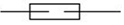
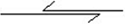
(정답률: 82%)
46. 컴퓨터의 처리 시간 단위에서 10-12초를 뜻하는 것은?
- 밀리초(ms)
- 마이크로초(μs)
- 나노초(ns)
- 피코초(ps)
(정답률: 45%)
47. 철근 상세도에 표시된 「C.T.C」가 의미하는 것은?
- center to center
- count to count
- control to control
- close to close
(정답률: 76%)
48. 다음 중 도면작도 시 유의 사항으로 틀린 것은?
- 구조물의 외형선, 철근 표시선 등의 선의 구분을 명확히 한다.
- 화살표시는 도면 내에서 다양한 모양을 선택하여 사용한다.
- 도면은 가능한 간단하게 그리며, 중복을 피한다.
- 도면에는 오류가 없도록 한다.
(정답률: 83%)
49. 본 설계에 필요한 도면에 대한 설명으로 옳은 것은?
- 일반도 - 주요 구조 부분의 단면 치수, 그것에 작용하는 외력 및 단면의 응력도 등을 나타낸 도면으로서 필요에 따라 작성한다.
- 응력도 - 상세한 설계에 따라 확정된 모든 요소의 치수를 기입한 도면이다.
- 구조 상세도 - 제작이나 시공을 할 수 있도록 구조를 상세하게 나타낸 도면이다.
- 가설 계획도 - 투시도법 등에 의하여 그려진 구조물의 도면이므로 미관을 고려하여 형식을 결정할 경우에 이용된다.
(정답률: 71%)
50. 건설재료 중 콘크리트의 단면 표시로 옳은 것은?
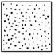
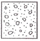
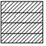
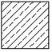
(정답률: 84%)
51. CAD 시스템을 도입하였을 때 얻어지는 효과가 아닌 것은?
- 도면의 표준화
- 작업의 효율화
- 표현력 증대
- 제품 원가의 증대
(정답률: 84%)
52. 지름 16mm인 이형철근의 표시방법으로 옳은 것은?
- A16
- D16
- Φ16
- @16
(정답률: 72%)
53. 다음 그림은 어떤 재료의 단면 표시인가?
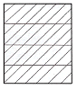
- 블록
- 아스팔트
- 벽돌
- 사질토
(정답률: 74%)
54. 멀고 가까운 거리감을 느낄 수 있도록 하나의 시점과 물체의 각 점을 방사선으로 이어서 그리는 투상도법은?
- 투시도법
- 사투상도
- 등각 투상도
- 부등각 투상도
(정답률: 63%)
55. 선의 접속 및 교차에 대한 제도 방법으로 옳지 않은 것은?
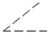
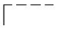
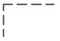
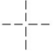
(정답률: 75%)
56. 내부의 보이지 않는 부분을 나타낼 때 물체를 절단하여 내부 모양을 나타낸 도면은?
- 단면도
- 전개도
- 투상도
- 입체도
(정답률: 75%)
57. 다음의 도면에 대한 설명 중 옳은 것으로 짝지어진 것은?
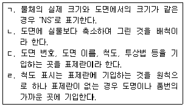
- ㄱ, ㄴ
- ㄱ, ㄷ
- ㄴ, ㄷ
- ㄷ, ㄹ
(정답률: 58%)
58. 다음 중 컴퓨터의 보조기억장치에 해당되지 않는 것은?
- HD
- CD
- RAM
- USB
(정답률: 53%)
59. 주어진 각(∠AOB)을 2등분할 때 작업 순서로 알맞은 것은?
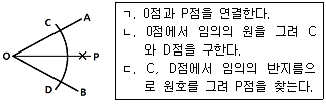
- ㄱ - ㄴ - ㄷ
- ㄱ - ㄷ - ㄴ
- ㄴ - ㄱ - ㄷ
- ㄴ - ㄷ - ㄱ
(정답률: 61%)
60. 재료 단면의 경계 표시 중 암반면을 나타내는 것은?
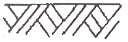
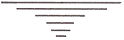
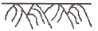
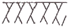
(정답률: 81%)
그러나 이 문제에서는 보기에서 선택할 수 있는 답안이 모두 철근의 직경과 다른 값을 가지고 있습니다. 따라서 보기에서 선택할 수 있는 답안 중에서 철근의 직경과 가장 가까운 값인 101.6mm를 선택해야 합니다.
이 값은 철근의 지름인 25.4mm를 4로 나눈 후에 180도에 대한 호의 길이를 구한 값과 같습니다. 즉, 25.4mm ÷ 4 = 6.35mm 이고, 180도에 대한 호의 길이는 (25.4mm × π × 180°) ÷ 360° = 127mm 입니다. 따라서 6.35mm × 2 = 12.7mm를 더해준 후 반올림하여 101.6mm가 됩니다.